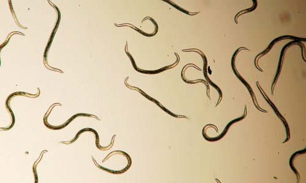

Majdnem elveszítettem a férjemet egy szörnyű fertőző betegség miatt: Magyarország lakosságának 80% -a fertőzött parazitákkal anélkül, hogy tudná! Ez bárkivel előfordulhat.
Üdvözöljük
Ismeri a bűntudat érzését, amikor az a személy, akit szeret, beteg, és nem tud segíteni, csak nézni a szenvedését? Ezt megtapasztaltam, és el akarom mesélni a családomat ért szenvedéseket, hogy ne ismételje meg ugyanazt a hibát.
Tibor és én 27 évet éltünk együtt, és szinte soha nem veszekedtünk. A barátok még mindig „ifjú házasoknak” hívnak minket. Sok tervünk volt, de nem lett belőle semmi.
Az egész akkor kezdődött, amikor a férjem panaszkodni kezdett a rossz leheletre . Orvos voltam, ezért elmentünk ellenőrizni a fogainkat és a gyomrunkat, de nem észleltek semmilyen betegséget.
Ezek után aggasztó tünetekjelentkeztek. .
A férjem puffadástól szenvedett , nem volt étvágya, és nagyon lefogyott.
Panaszkodni kezdett a szívére, májára és hasnyálmirigyére. Elektrokardiogramot készítettünk, vérvizsgálatot végeztünk, de mindkét teszt negatív volt.
És emellett az intimitás is eltűnt az életünkből. Egy nap elismerte, hogy merevedési problémája van. Egy hozzá hasonló erős és energikus férfi hirtelen mogorvává vált, mindig feszült és elvesztette érdeklődését az élet iránt. .
Amikor megérkeztünk a kórházba, az orvos szörnyű diagnózist mondott nekünk - parazita fertőzés . A férjem testének majdnem 70% -át paraziták foglalták el. Ennek okát nem tudtam teljesen megérteni, mert a férjem mindig tiszta, fertőtlenítő kendőt használ, és az étel gondosan van megfőzve. Nem tudtam elképzelni, hogy ezek az enyhe tünetek parazita fertőzés jelei.

Kíváncsi voltam, HOGYAN LEHET? Aztán elvettem a férjem vizsgálati eredményeit, és levelet írtam a Magyar Parazita Kutatóközpontnak. Megdöbbentő választ küldtek nekem:

"A férje minden problémája egy parazita fertőzés első tünete. Amikor megfertőződik egy parazitával, a szervezet lassan lebomlik. Először nem tipikusak a tünetek, majd minden kiderül. Elkezdődik a puffadás, depresszió, fejfájás, sötét karikák a szem alatt, rossz étvágy, ízületi és izomfájdalom. Férfiaknál a paraziták prosztatabetegséget, impotenciát, szívbetegséget és májbetegséget okoznak. Nőknél hüvelyi eredetű gyulladás, petefészek -duzzanat, hólyaggyulladás, petefészek -daganatok, policisztás petefészekrák, vese-, húgyúti- és vese -duzzanat, valamint a bőr öregedése. Gyermekeknél pattanásokat és üveges szemeket okoznak. Ha figyelmen kívül hagyjuk az enyhe tüneteket ezek a belső szervek károsodásához és végül halálhoz vezetnek. "
Magyarországon évente 8500 ember hal meg anélkül, hogy tudná, hogy a paraziták költöztek a testébe. Láthatatlan gyilkosok vannak körülöttünk, halakban, zöldségekben és gyümölcsökben, amelyeket az emberek a boltokban vásárolnak.
Elkezdtem gyógymódot keresni. Majdnem megőrültem, mert nem tudtam nyugodtan nézni, ahogy a szemem előtt szenved, akit szeretek. Többnyire nem aludtam. Több tucat könyvet olvastam el, tanácsokat kértem a kollégáimtól. Sok gyógyszert kipróbáltunk, amelyek egyáltalán nem működtek, és az orvosok nem tudtak segíteni nekünk. Állapota rosszabbodott. Azt hittem, haszontalan vagyok, és magamat hibáztattam, hogy nem tudtam megmenteni.
Abban a pillanatban, amikor azt hittem, hogy mindez hiábavaló, találtam valamit az interneten - a teát.
Közel 250 000 fertőzött ember, aki ezt a terméket használta, két nap alatt csaknem 300 különböző parazitát távolított el.
Felmérés: Hogyan távolították el a parazitákat?
Először bizalmatlan voltam, de a férjem állapota nem javult, ezért úgy döntöttem, hogy teszek valamit. A termék egy napon belül megérkezett.
Elkezdtem elkészíteni a férjemnek azzal, egy teáskanál teát egy csésze forrásban lévő vízbe tettem, és 30 percig hagytam állni, napi 2-3 csészét adtam neki az utasításokban leírtak szerint. Nagy megkönnyebbülés volt, mert a tea valóban hatékony, és nem tudom szavakba önteni.
Egy nap múlva a máj és a belek visszatértek 65% -os működésükhöz, a vesék és a szív pedig normálisan működtek. 3 nap múlva, amikor egyedül voltunk, a férjem azt mondta, hogy erekciója van. A tea természetes összetevői nagyon hatékonyak a szövetek regenerálásában, és így a kezelés gyorsabb.
5 nap múlva a férjem újra tesztelték. A szervezetben nyoma sem volt parazitáknak. A Tea néhány óra alatt eltávolított minden tojást és egyéb, a szervezetet károsító dolgot. A hosszantartó használatnak köszönhetően a Tea erősíti az immunrendszert és megvédi a sejteket a parazitáktól. Ezzel elkerülhető az újbóli fertőzés lehetősége hosszú távon. Egy hét után a férjem teljesen felépült.
Később rájöttem, miért nem találtam teát a gyógyszertárakban és más üzletekben. Ennek oka az, hogy ez a termék új és nagyon hatékony (mi kipróbáltuk), de az esetleges áremelkedés és hamisítás miatt nem hirdették a médiában. Ezért ezt a terméket csak a gyártó hivatalos weboldalán lehet megvásárolni.
Ne kövesse el ugyanazt a hibát, mint én! Ha korábban figyeltem volna ezekre az ártalmatlan tünetekre (puffadás, rossz lehelet és merevedési zavar) , akkor a férjem nem lett volna ilyen rosszul.
A tea egy egyedülálló gyógynövény keverék, amely azonnal meggyógyítja a parazita fertőzés első tüneteit, és megszünteti a fertőzés megismétlődésének lehetőségét, Ha a történetem elolvasása után legalább egy tünetet fedez fel (!) INDÍTSA MOST A KEZELÉSÉT!
Kérjük, óvja magát és szeretteit, rendeljen teát, amint az első tünetek megjelennek, és ne várjon a szövődményekre.

 3 ●
3 ●